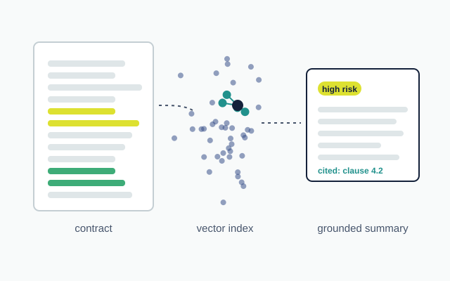

Terms of Service Risk Analyzer
- Built an end-to-end retrieval-augmented generation (RAG) system that parses dense user agreements, embedding legal text chunks with Hugging Face sentence-transformers into a FAISS vector index.
- Used an LLM API with constrained prompts to extract hidden privacy clauses and arbitration rules, producing grounded risk summaries with exact document citations.
- Served it through a FastAPI backend, containerized with Docker and deployed on AWS EC2, processing multi-page contracts in under 15 seconds.